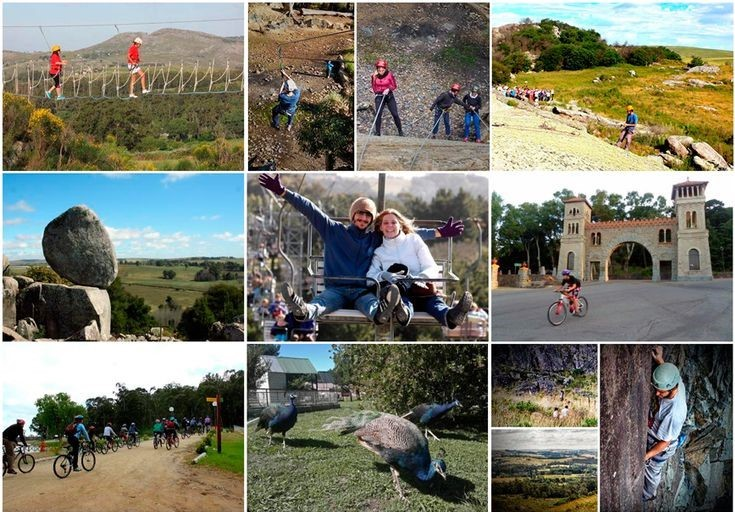

Propuesta Multiaventura-Itenarios
Ciclismo:
Actividad 1 :
Se realiza un recorrido por la ciudad donde veremos la laguna, la piedra movediza, el castillo de Tandil y el monumento al Quijote,
donde se podran ver los hermosos paisajes de la ciudad. Almuerzo de marcha.
Dificultad:
-Edad: 15 años.
-Camino: Llano.
-Km Aprox: 35km.
-Caminos: 90% asfalto, 10% tierra.
Actividad 2:
Gran desayuno y nos preparamos para salir hacia Iraola, un pequeño pueblito cercano a tandil, donde no llegan a los 100 habitantes.
Conoceremos su estación de ferrocarriles donde pasa el tren de cargas y conoceremos su historia. Volveremos pasando por diferentes puentes y
arroyos donde podremos descansar y sacar algunas fotos.
Dificultad:
-Edad:16 años.
- Camino: Llano.
-Km Aprox: 60km.
- Caminos: 70% asfalto, 30% tierra.
Actividad 3 :
Salimos rumbo a Gardey a traves de senderos entre medio de los campos, pasando por las vias del ferrocarril.
Gardey es un pequeño pueblo con casas antiguas que nos remontan a los inicios de las queserías de Tandil, en el pueblo almorzaremos en una pulpería de campo
con sus conocidos fiambres y quesos.
Ya volviendo hacia Tandil pasaremos por la base aérea donde podremos ver los monumentos a antiguos aviones que sirvieron al país.
Regreso a Tandil, merienda de despedida y Fin de nuestros servicios.
Dificultad:
- Edad: 18 años.
- Camino: Terreno con elevación.
- Km Aprox: 65km
- Caminos: 60% asfalto, 40% tierra.
Canotaje:
Actividad 4:
Se realiza salida desde el centro náutico del fuerte de lunes a domingo a partir de las 10:00
de la mañana. Duracion del recorrido 1 una hora.
-Disponibilidad grupal: Máximo 4 personas por canoa.
-Implementos: Todos los implementos (chaleco salvavidas, casco, remos, bote y traje de neopreno).
-Guía turístico: Capacitado en canotaje con conocimiento de inglés y español (servicio compartido).
-Grado de dificultad: fácil.
-Edad mínima: 10 años.
-Época del año: septiembre a abril.
Parapente:
Actividad 5:
-Inicio: De lunes a domingo a partir de las 09:00 hs.
-Salidas: Desde la oficina nos dirijimos a Cerro Las Animas.
-Duración: 30 minutos (dependiendo especialmente de las condiciones meteorológicas).
-Implementos: Todos los implementos de seguridad.
-Cupo: Min. 1 – Max. 4 personas.
-Grado de dificultad: Regular.
-Edad mínima: 18 años.
-Época del año: Todo el año.
Paracaidismo:
Actividad 6:
-Inicio: De lunes a domingo a partir de las 09:00 hs.
-Salidas: Desde la oficina nos trasladamos hacia el Aeroclub Tandil.
-Duración: Media hora.
-Cupo: Max. Grupos de 2 personas.
-Grado de dificultad: Difícil.
Trekking:
Actividad 7:
-Inicio: De lunes a domingo a partir de las 09:00 hs.
-Salidas: Desde la oficina nos dirijimos hacia La Cascada.
-Distancia: 7 km.
-Duración: Aproximadamente 2 horas (dependiendo el ritmo de la actividad).
-Cupo: Max. Grupos de 10 personas.
-Grado de dificultad: Fácil.
-Edad mínima: 12 años.
-Época del año: Todo el año.
Actividad 8:
-Inicio: De lunes a domingo a partir de las 10:00 hs.
-Salidas: Desde la oficina nos dirijimos hacia los pioneros.
-Distancia: 12 km.
-Duración: Aproximadamente 4 horas (dependiendo el ritmo de la actividad).
-Cupo: Max. Grupos de 10 personas.
-Grado de dificultad: moderado.
-Edad mínima: 15 años.
-Época del año: Todo el año.
Actividad 9:
-Inicio: De lunes a domingo a partir de las 11:00 hs.
-Salidas: Desde la oficina nos dirijimos hacia el lago del fuerte.
-Distancia: 5 km.
-Duración: Aproximadamente 1 hora (dependiendo el ritmo de la actividad).
-Cupo: Max. Grupos de 10 personas.
-Grado de dificultad: Fácik.
-Edad mínima: todas las edades.
-Época del año: Todo el año.
Senderismo:
Actividad 10:
-Inicio: De lunes a domingo a partir de las 09:00 hs.
-Salidas: Desde la oficina nos trasladamos hacia Avenida Don Bosco y Rotonda del dique.
-Duración: Aproximadamente tres horas (dependiendo el ritmo de la actividad).
-Cupo: Max. Grupos de 10 personas.
-Grado de dificultad: intermedio.
-Edad mínima: 15 años.
-Época del año: Todo el año.
Vuelo Planeadores:
Actividad 11:
-Inicio: De lunes a domingo a partir de las 09:00 hs.
-Salidas: El punto de encuentro es la oficina y vamos al club de planeadores.
-Duración: 1 hora.
-Cupo: Max. Grupos de 2 personas.
-Grado de dificultad: Fácil.
-Edad mínima: 15 años.
-Época del año: Todo el año (Depende de las condiciones climáticas).
Cabalgatas:
Actividad 12:
-Inicio: De lunes a domingo a partir de las 09:00 hs.
-Salidas: Todas las salidas lo hacemos desde la oficina y nos dirijimos hacia Avenida Don Bosco y calle Papa Francisco.
-Distancia: 5 km.
-Duración: Una hora.
-Cupo: Max. Grupos de 12 personas.
-Grado de dificultad: Fácil.
-Edad mínima: 08 años.